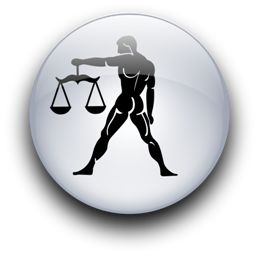
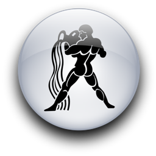
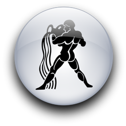

Женщина Водолей и Мужчина Весы
-
 

Она по-детски мила и женственна, и ею прекрасно, а иногда яростно управляет мужская планета Уран. Он добродушен, мягок и добр, но иногда просто невыносим. Это зависит от того, как давно она вывела его чувствительные весы из состояния равновесия с помощью кузнечного молота своего непредсказуемого поведения. Они вместе работают над диссертациями, намереваясь стать учеными-медиками, открывшими что-то очень важное для человечества.
Эти мужчина и женщина действительно существуют, но во время рассказа о них, может быть, многие другие женщины-Водолеи и мужчины-Весы узнают себя, как в зеркале?
Он никак не может решить, жениться ему на ней или лучше им расстаться... У нее такой проблемы нет. Она точно знает, что ей нужно, и ее выбор тверд, как скала. По воскресеньям она хочет выйти за него замуж. Каждый второй вторник она уверена, что им следует жить вместе, пока они оба не защитят диссертации. По четвергам, подчиняясь внезапному воздействию Урана, она хочет, чтобы ее оставили в покое. Тогда она бросает трубку мимо рычага и вставляет в двери второй замок. В одну из отчаянно скучных суббот на нее что-то находит, и она настойчиво просит расстаться с ней. Это желание она недвусмысленно приводит в исполнение, выбросив всю его одежду из окна спальни со второго этажа и вдобавок его новые часы, которые, к сожалению, не выдерживают падения. И, кроме того, его научные работы, которые, конечно же, разлетаются по снегу, и теперь их придется перепечатывать заново. Но зато никто не обвинит ее в равнодушии!
В такую же скучную субботу она разорвет страницы своей диссертации на мелкие кусочки и с талантом актрисы спустит их в унитаз. Она громко объявит, что собирается объездить всю Европу автостопом и примкнуть к цыганскому табору. И кому, в конце концов, нужна эта дурацкая медицинская степень?
Он не может успокоиться. И вместо того чтобы радоваться, когда она, настроившись на примирение, зовет его на особенный домашний обед, настойчиво выясняет имя цыгана, пригласившего ее присоединиться к табору. Он требует. Благодаря своему богатому воображению, она сочиняет имя. Взбешенный, он уходит, так и не доев обеда, на приготовление которого она потратила весь день.
Однажды он окончательно решил, что они не должны больше друг друга видеть. Прихватив собаку, микроскоп, брюссельскую капусту и навсегда покинул ее, переехав с другом в другой город. Она быстро определила и его адрес, и его телефон. (Водолеи - прирожденные сыщики.) Через несколько месяцев он уже приносил ей цветы, стихи, небольшие подарки и приглашал на ужин при свечах два раза в неделю. Затем он переехал снова вместе со своей собакой, микроскопом, брюссельской капустой и тремя друзьями (чтобы его защищать).
В первую же ночь им не удалось защитить его. После бурной ссоры из-за того, что он превратил их счастливый дом в пансион, он и трое его друзей ушли в кабинет спать на полу, заперев за собой дверь.
Он закрыл дверь и не пускает ее? И он еще считает себя справедливым? До трех часов ночи она изобретала в раковине на кухне отвратительную смесь с аммиаком, затем аккуратно налила ее в шприц (все именно так и было!), просунула его под дверь, которую она также заперла со своей стороны, и нажала на поршень. Сначала четверо задыхающихся мужчин, которых ядовитые пары пробудили ото сна, прервав их звучный храп, подумали, что это атака НЛО. (Легко перепутать водолейскую шутку с инопланетным вмешательством.) Когда они спаслись через окна, они, конечно же, наткнулись на одежду мужчины-Весов и на его часы - все было разбросано по земле в ожидании его прихода...
Через несколько недель после этого они помирились и сейчас мирно изучают вместе анатомию и биохимию.
Видите, они любят друг друга. Они нужны друг другу. Потому что больше никто не способен относиться к ней с такой же нежностью и пониманием, как ее мужчина-Весы. И никто не будет любить его, со всеми его недостатками, так же верно и преданно, как его непостоянная подруга-Водолей. Разве кто-нибудь еще скажет ей "Я люблю тебя" с настоящими слезами на глазах? И кто еще будет сентиментально носить разбитые часы, потому что это подарок от нее?
Дружба для Водолеев - это святое. Вы можете быть любовниками или мужем и женой, но между вами есть еще и дружеские отношения. И вы знаете, что существуют определенные вещи, которые друзья делают, и определенные вещи, которых друзья не делают. Друзья никогда не обсуждают вас с посторонними людьми. Друзья не нарушают обещаний. Друзья принимают вас со всеми вашими недостатками. Друзья вас не предают и всегда готовы прийти на помощь. Водолеи никогда не требуют от друзей больше, чем могут дать сами. И пожалуй, они редко понимают, что их определение дружбы равнозначно определению настоящей любви.
Ее мужчине-Весам, нужны гармония и спокойствие. Если этого нет, он может даже заболеть - физически, психически и эмоционально или всем сразу. Поэтому женщина-Водолей, которая по-настоящему любит этого мужчину, сделает искреннюю попытку стать менее эксцентричной (кроме крайних случаев) и будет очень стараться, чтобы в их отношениях было больше равновесия и спокойствия. Это зачастую нелегкая задача, потому что сам мужчина-Весы будет упрямо создавать вокруг себя дисгармонию, стараясь всем угодить, работая месяцами на износ и беспокоясь о всех своих друзьях, беря на себя их проблемы. Иногда он пытается что-то доказать всему миру, хотя мир даже и не подозревает, что он так старается улучшить его! Когда он невыносимо расстроен, он может начать пить и курить на всю катушку, а потом его будет мучить совесть, ведь из-за этого он забыл о своей женщине, занятиях, работе, здоровье и т.д. Правда, Весы умеют сглаживать разногласия и улаживать сложные ситуации спокойно и без труда. Жаль, что у них, кажется, нет привычки держать в равновесии собственные ум и тело. Мужчина-Весы может быть энергичным в течение долгого времени, но этот период закончится так неожиданно, что его подруга-Водолей испугается, не случилось ли с ним чего-нибудь. Но он только отдыхает. Всего лишь отдыхает. Оставьте его в покое, и он станет самим собой, когда снова накопит энергию. А пока вы должны вертеться вокруг него, быть терпеливой и обходительной, окружить его покоем, чистотой и красотой, следить, чтобы в комнате было побольше свежего воздуха. И никаких споров, пока он, бедный, плашмя лежит на диване!
Любовь во всех ее проявлениях, не исключая и сексуальную ее сторону, необходима мужчине-Весам как воздух, как дружба - во всех проявлениях - женщине-Водолею. Если он будет ее настоящим другом, она сможет безоглядно доверять ему, став действительно той женщиной, романтической и сексуальной, о какой он всегда мечтал.
Это может быть равный союз, в котором каждый дает другому то, что ему больше всего нужно. Но она способна продемонстрировать свою холодность, если он накануне чем-то обидел ее, а он считает для себя невозможной близость с ней, если перед этим она одолела его в интеллектуальном споре или каким-то образом выставила его дураком. Хочется напомнить им обоим древнюю поговорку: "Никогда не позволяй солнцу заходить в гневе". Им лучше всего просто мирно заснуть, держась за руки, чтобы утром вместе с ними проснулась любовь, удивив их своей глубиной и нежностью. То, что касается только их двоих, должно быть тактично, но ни в коем случае не агрессивно или требовательно. Любовные отношения двух воздушных знаков очень хрупки, и любое насилие над любовью лишь испортит ее нежную прелесть.
Эти двое устроены так, что постоянно обижают друг друга, потому что очень любят.